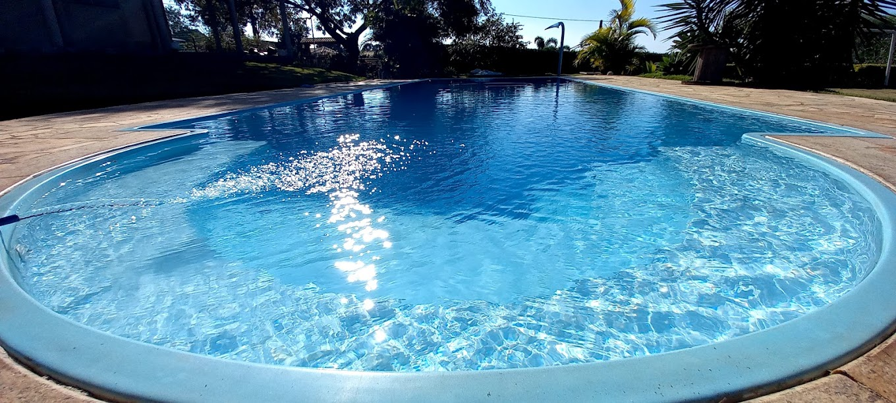

AquaClean

Sobre Nós
Empresa especializada em oferecer serviços de limpeza e manutenção para piscinas residenciais, comerciais e
públicas. Os serviços de limpeza geralmente incluem a remoção de detritos e sujeira da superfície da piscina, a
aspiração do fundo, a escovação das paredes e a limpeza dos skimmers e cestos de lixo. Além disso, verificar o
PH e os níveis de cloro da água, ajustando-os conforme necessário.
Missão
- Fornecer serviços de limpeza de piscina de alta qualidade e confiabilidade para garantir a satisfação total
dos nossos clientes.
- Oferecer soluções personalizadas para a limpeza e manutenção de piscinas residenciais e comerciais.
- Ser reconhecido como líder em serviços de limpeza de piscina, garantindo a tranquilidade e a segurança de
nossos clientes
Valores
- Compromisso com a qualidade dos serviços prestados.
- Transparência e honestidade nas relações com os clientes.
- Responsabilidade ambiental e social.
- Excelência no atendimento ao cliente.
Onde Nós Estamos
Map
Siga nas Redes Sociais
YouTube